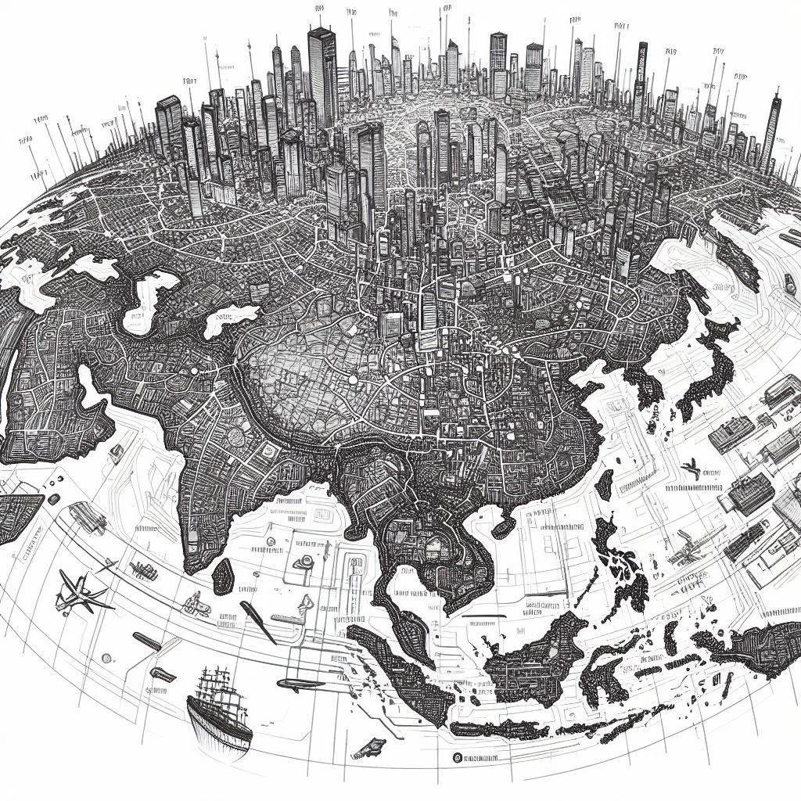

Welcome to The Network

How did consumers become so separated from
producers? Why are there less and less good
options available for food, goods, and other
services? Why is there not a huge supply of
untaxed, unregulated grey and black market goods,
with countless supply lines providing a robust and
healthy market for those who wish to get their
needs met through non-government channels? There
are some places on earth where a direct to
consumer relationship is still thriving, but we
are focused on making this available in the vast
areas that have moved past this practice.
The major reason why more farmers don’t work
outside of the government system is fear. They
have a healthy fear that they will be found and
punished if they go against “the law” (aka “the
lie”). Our mission is to make it possible for
farmers, agorists, and anyone seeking to free
themselves from taxes or regulations to sell
without fear of government persecution.
There is a common perception that in order to
be “doing agorism”, one has to be disconnected
from social media and other forms of
communication. We recognize the value of privacy
and support those who wish to remain
disconnected, but there is also great value in
having a public-interfacing faction of the
network aimed at growing and upgrading the
network of individuals who recognize the true
nature of the State and of all who seek to
restrict the freedom to peacefully conduct
oneself with other consenting individuals, the
right to freedom of association, the right of
self-defense, and the right to restitution for
damages done to the person or property of the
individual unless the damage was inflicted in
self-defense.
There will have to be a group of people who are
putting themselves on the line in order to grow
the network. We are not trying to make a network
that is insular and inaccessible to outsiders.
We need to create something that is both safe
and widespread, as the survival of the network
relies on its dispersed nature, not on one
branch becoming large and noticeable and thus
susceptible to being torn down. This benefits
the market and every individual in it as it is
imperative to have multiple sources of goods and
services to create resilient, decentralized, and
redundant networks.
Our current system, heavily reliant on taxes and
regulations, hinders true freedom and wealth by
funding undesirable activities and limiting
individual choice. A key problem is the lack of
accessible, tax-free goods and services, as
producers fear leaving the traditional system due
to uncertain demand. While the demand for such
"agorist" goods exists, consumers struggle to find
them.
Our solution is a decentralized network that uses
Agorism to foster freedom, wealth, and resilience.
We're building connections between consumers and
producers, creating free marketplaces where all
vocations can thrive outside the conventional
system. Decentralization ensures there's no single
point of failure or monopoly, providing countless
sources of goods and services, increased consumer
choice, and a robust contingency plan for supply
lines.
When you begin to think in terms of the real world
and what is possible when people are free to act
as they want, you can begin to see the value that
would be kept in the family if we made more
decisions that favored people who knew how to
direct their actions toward building a strong
network that will take care of us when we were in
trouble.
For example, the network we are working on opposes
the idea of keeping a job that funds the state
when there are jobs available to you that
don’t. That’s why we are working to
expand the number of jobs available within the
network that meet these criteria: they do not fund
the state or people who fund the state.
Eventually, this will look like all participants
in all transactions not funding the state with
their shelter, job, food, or leisure activities.
Roadmap
The following is an overview of this website with
a link to each section.
Who We Are
Welcome

The current page.
The Network

We are focusing on growing the wealth of
everyone we can through agorism. Agorism is the
practice of circumventing the State through
counter-economics.
What is Voluntaryism?

Voluntaryism is the moral philosophy that all
forms of interaction should be voluntary, and
that the only just use of force is defensive
force. We abide by the Non-Aggression Principle
(NAP) which dictates that no action be taken
that violates another’s consent if not in
self-defense.
Voluntaryism, Plus

We are practicing voluntaryism with a twist.
Voluntaryism plus intention. To get a more
concise and potent result, we are more concise
with our parameters. Those parameters are
simply: are you making the world more free for
just yourself? Or does your plan make the world
more free for others as well?
Our Plan

Anyone in the next 100 years could find this set
of instructions and re-create what we are doing
now. But there will be no need to start from
scratch. As soon as the number of people are
proliferating the ideas contained herein, there
will be more aversions and more resiliency
because of them.
Caravan Welcome Outpost

Welcome to the agora! This is the wolcome desk
of Caravanarchy. Here you will find a year-round
marketplace to exchange ideas and goods.
The Outreach Caravan

Both network host (accepting new members to be
vetted for further network involvement) and
welcome outpost, the caravan blends these
capabilities while retaining wings focused on
outreach, protection, and whatever other topics
the current team cares about.
Chew’s Wisely
Our “Ice Cream Philosophy” is that
we strive to bring to market the finest quality
Homemade Ice Cream products, sourcing
ingredients from as many agorist sources as
possible, sourcing only the highest quality
ingredients.
This means no gums or perservatives, all organic
ingredients (when possible), and raw heavy cream
when we have a quality agorist source nearby.
We are a private membership association and we
pride ourselves on our handmade small-batch
process to ensure the ice cream is fresh and
customized to the occasion.
Intro

This section contains information on the avenues
that lead into into the more protected areas of
the network.
Admissions Portal

Want to join the inner realm? This is an
overview of what is required to move forward
into the protected areas of the network and
introduces the avenues one may take to achieve
this position.
Network Hosts

One may spend time with a network host who has
pledged to host you on the property of their
choosing while introducing you to the network
and assessing your understanding of the tenets
of the network.
Guilds

Guilds are like guilds in which one may learn a
trade or practice a trade. Preferred Guilds
follow certain guidelines outlined herein.
Freedom Guard

You can form a freedom guard devoted to one or
many specialities.
Security Mesh

The security mesh consists of all people who
know that the state is illegitimate and who are
able in some way or another to be available to
help someone in need without using state
intervention.
Downfall of The Greats

A discussion of popular pieces of media,
especially those that are beloved in the
anarchist community, where they fail
philosophically and how that may hold us back.
Library

This is a repository of information in the form
of links to writings on agorism and
voluntaryism.
You and The Network
Intro

How will you create your new role in the life
you were meant to live?
You and the Network

What is your comfortability level with risk?
This can help you determine on what level do you
want to become involved in the network. We need
people on all levels, from spreading the word to
delivering goods to the network.
Transcending Location

A location is only as safe as the contingency
plan and its feasibility. Any one location is
vulnerable. Having a backup is a step up. Having
a huge network of people is closer to the
objective by far.
New Lexicon

We need to have easily referenced, better
versions of things and ways to say it. We have a
lot to leave behind. There are certain aspects
of the current paradigm that have been holding
us back. The effort to adopt a new paradigm can
be aided by the addition of a new language and
concepts to fill in the gaps.
Start Here

A few questions to determine how you should
traverse this guidebook.
Entry Guide

Determine how you can change your life depending
on what you are passionate about and what need
to change in your life.
Freedom Prompts

Some questions to help you determine what you
would like to change about your life.
Anarchy Degrees

A self assessment to help you create a larger
vision for what you could be doing with your
life based on gradual levels of improvement in
areas of your choosing.
To Be Happy

Reasons why the state is unnatural and how that
may well lead to its dissolution over time.
Intro

Bounty Board

A board where agorists can post the goods and
services they need or want as well as what they
offer. There are distinctions between inner
realm and outer-realm.
Festivals

A list of festivals and agorist markets.
Map

A page for maps of both the inner and outer
realm.
Events

A listing of events both recurring and
non-recurring..
Links

Links to other agorist projects.
This is a guide outlining the scope of what is
possible in the next 1-10 years. This is not a
guide on how to create a voluntaryist society
starting where you are with only the resources
present in your local community. That is not
possible. To achieve this goal, an individual must
network with people who both share the vision and
who understand the strategy needed to make the
vision a reality. No matter how far away these
pepole are, they are infinitely more useful
towards the goal of a voluntary society than
someone who understands the philosophy but has no
vision.
Spreading freedom (and a voluntaryist society)
requires that you first take care of your personal
need for autonomy and freedom. It will also
require intentional choices aimed at both starving
and bleeding our primary enemy (the State) of
resources and power while supporting and
bolstering your allies and friends in freedom.
The first step is to ascertain whether relocation
or nomadic living might be the most lucrative way
to achieve your short-term goals while
transitioning out of the non-agorist system (What is Agorism?). There are locations available for short or
long-term living rent and work-free while you
detox from society or re-evaluate your goals.
These are voluntary spaces, both nomadic and
stationary, which take shape depending on the
unanimous consent of the people who reside there.
We seek these spaces out on our journeys, so that
everywhere we go, we can direct you to them. As
time progresses, these spaces will transform. For
example, a property with no development on it can
be used to sustain people who just need a place to
stay. If multiple people live there, the cost of
living can be very small because you only need one
vehicle to get food and water. Working together,
we can use free and natural materials to build
shelters. These properties can produce exports
that nomadic travelers can sell for them along
their travels.
If you would like to open up a space for this
purpose, let us know.
We are often told that in order to create the
change we want to see in the world, we have to
start by changing ourselves. The reasoning goes
that if we start having more positive
interactions, those around us will also be
empowered to have positive interactions. I think
this is a good idea, but that it essentially
disempowers those who adhere to it. What is
implied is that the most change we could possibly
feel accountable for is a very small shift in the
way certain people think or act due to our
positive vibes.
Most people I meet are already advanced enough
spiritually and mentally that they know what it is
to be a good person and can recognize a good
interaction when they see it. We do not need to
become spiritual gurus in order for the world to
be affected by our good actions.
With the network (which we are not creating but
are helping grow) our reasoning is similar but
differs in a very important way. We believe that
if you understand the non-agression principle, and
its implications, including the self-defense
principle, once introduced to it, you already have
the necessary development to empower those around
you.
We also believe that the infrastructure is not yet
in place that would create a simple and effortless
transition for you and those around you into a
life adhering to this principle.
Therefore, we have created this framework in order
to inspire you and those you communicate with.
Hopefully, it will help you understand a new way
of doing things. This plan will require a fair
amount of people to change their tune in order to
actualize the vision, but in reality, many are
already doing what it takes to make this possible.
To say that you alone can make the change needed
is unrealistic. Perhaps, if you already were
surrounded by only empowered and flexible
voluntarists, who were already spending their
entire lives trying to create an agorist counter
economy, just being armed with this information
could be all it took to mobilize yourself and
those around you to start participating in a
network that would change your lives and the
entire world, eventually.
However, most people exist within webs with others
who do not see the same potential outcome of
freedom for all. People who, usually out of fear,
are not willing to make a big change to their life
to help this reality come into existence.
If you are in this situation, I do not encourage
you to try to change the minds of those who do not
want to hear it. Instead, you should use this
network to find those who are already on the same
path that you are.
You do not need to try to create a new paradigm
from scratch in your current location or local
community. To bring about the best of all possible
worlds, where everyone has access to a free and
fulfilling way of life, you must find those who
already agree with your values and vision no
matter where they might reside. Instead of trying
to influence a lifestyle change in those still
resistant to the idea of protected free
communities, you can combine your efforts with
those who share your intentions and who already
see the vision of what is possible in this
lifetime.
You could spend a lifetime trying to persuade
others to see the vision themselves and then to
become active in changing their own lives. But
there is a quicker way to achieve freedom. Network
with people who already understand that freedom
from the existing lies, taxes, and restrictions on
peaceful activity is needed, and grow resilient
trade networks with those individuals toward that
shared goal. This is called agorism, and this
website is a guide to creating this in your own
life.
Though some people have the drive and desire to be
leaders at the forefront of a dispersed community
that values and protects their freedom to
peacefully interact and transact without
repercussions, we can’t wait for those
people to come out of the woodwork to begin
creating a new free way of living. Word of mouth
takes time to propagate. Most people can’t
be expected to change when there isn’t an
obvious and well-worn path towards a new way of
living.
Creating a new world will require a relatively
small dispersed group of people who not only are
interested in a new world but who are prepared to
take action in their lives to create an alternate
network of agorists aimed at creating this
ecosystem for each other, replacing streams of
resources from the exploitative system with the
networked goods and services of protected free
markets. This does not mean an end to the
importation and production of goods, but simply to
better sources of them. Sources that do not, for
example, fund the war machine, enslavement, and
mass incarceration of human beings.
Until this alternative network becomes more
ubiquitous, it will be hard for individuals to
abandon their current lifestyle and transfer all
their income and expenditures over to these free
and ethical sources. There are already people
spread out across the country and world who are
prepared to make that shift in a way that creates
more opportunities for everyone seeking a free way
of life.
The larger community is made up of individuals who
have the skills and knowledge necessary to support
one another. What support does the individual need
from a network? Every good or service you spend
money on can be re-sourced. Medical care,
insurance, gasoline, jobs, and education to name a
few. Everything that drives the world today can be
provided in a better way by the community.
Some say that a better future starts with an
internal change - that you must start with
yourself to make the world a better place. We
don’t think one person’s actions alone are enough
to create change at the scale needed to achieve
our objective. In order to extend your range of
influence and exercise your power to create
change, you need to skip trying to change other
people’s minds and instead connect to others who
already see the way forward to make a change.
Networking with other freedom-seekers and
expanding your social circles and trade options is
the most effective way of creating the best of all
possible worlds. We know this is the way to create
the best of all possible worlds because it permits
everyone to choose how to spend their time and
resources without third parties imposing
themselves on their free-will choices. You can’t
change someone’s mind or make them advance
spiritually or mentally in a way they are not
ready to. But you can give people a better option
to spend their hard earned resources and time on.
This enables them to have more resources to pursue
what makes them truly happy while also assuring
themselves a better future.
This entire endeavor is focused on real solutions
and pulling anarchists out of the current paradigm
and placing them in the situations they need,
regardless of the resources or money they have
amassed as of yet in the zombie system. It’s not
too hard to opt-out if you have enough support.
This network is providing the extra support needed
by those who don’t already have a group of
individuals bolstering their efforts to bring
about a free and thriving existence for themselves
and others.
Get Involved Today
For those who want to get involved but don’t
know how that would look, joining a
network-connected caravan is the most immediate
form of aid.

CaravAnarchy is the first caravan of this kind
that we are aware of, although others have
employed various aspects of it. We have 4
vehicles and the mobile camping infrastructure
setup available so we can share the options
available to us from having access to tools and
infrastructure to support a loose, slow-moving
caravan with the aim of ending slavery today
through education, bolstering and establishing
agorism and encouraging the connection between
new and already made alternative networks. We
offer immediate access to a free way of living
and exploring what it means to exist and grow in
the most authentic and empowered expression of
yourself.
We aim to engage in agorist business and
networking in the towns and cities we travel
through. Presently, CaravAnarchy funds itself
through donations and through multiple agorist
business options we are equipped to employ. The
aim is to create a marketplace every time we get
to a new location, at which people in the nearby
area can conduct their commerce in a safe and
flourishing space. As traveling nomads,
CaravAnarchy’s members do not share in the same
debt-based lifestyle as most stationary peoples.
This means members require fewer resources to
sustain a happy, flourishing, and growth-based
way of life with an abundance of time at your
disposal.